Make font catalog
Script for InDesign. Written by Kasyan. The idea was inspired by this script written by John P. Morrissey. However, mine is a totally new script.
The script makes a catalog of all the fonts available to InDesign creating 7 lines of sample text in different sizes.
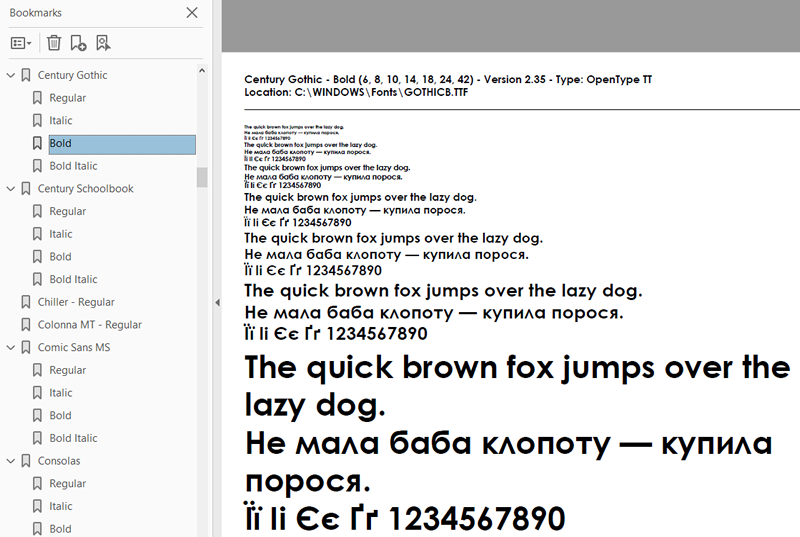
At the top, above the horizontal line, it displays the following information:
- Font name (font family — font style).
- Sample font sizes: 6, 8, 10, 14, 18, 24, 42. For each size, a paragraph of sample text is created.*
- Font version
- Font type
- Any font licensing restrictions if present
- Font location
* These values are hardcoded in the script, but you can change them in line #25 (the definition of pointSize array) to whatever you want. Note: the first value in the array — 14 — is used for the above-mentioned info.
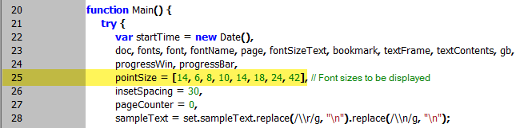
The dialog box
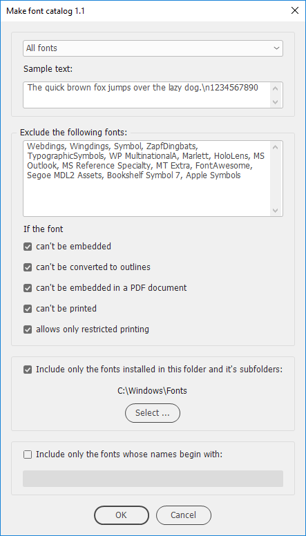
From the drop-down list at the top, you can select either All fonts, or only one font.
In the Sample text field, you can edit the sample text.
Note: to add a soft return (line feed) in InDesign, enter \n in the field.
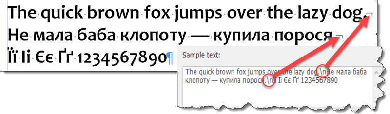
You can add as much text as you want — within a reasonable degree, of course — the page will grow vertically to fit the sample text. (This feature is available in versions starting from CS5 and above. In CS4 and below, the page won’t grow resulting in the text frame with overset text.)
For example, since I work for a magazine published in Ukrainian, I am interested only in Cyrillic fonts so I would add a short phrase in Ukrainian. Also, I’d add a few Ukrainian characters because not all Cyrillic fonts contain them.
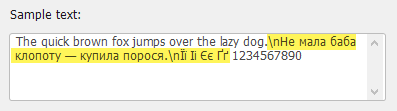
In the Exclude fonts area you can enter font names separated by commas that you want to be skipped by the script. A good idea is to exclude symbol fonts. I added a list of such fonts to the default settings, but you’re free to edit it on your own discretion. You can enter only a part of the name starting from beginning: for instance, “Wingdings” will also have effect on “Wingdings 2” and “Wingdings 3” fonts. The spaces before and after font names in the list are ignored by the script
To reference the exact name, use the following form:
Font family + [a space] + hyphen + [a space] + Font style
For example, Arial - Bold Italic
In this section you can also choose to skip fonts that have licensing restrictions:
- can't be embedded
- can't be converted to outlines
- can't be embedded in a PDF document
- can't be printed
- allows only restricted printing
This feature may come in handy to you if you are going to export the font catalog to PDF or print it; otherwise, only one restricted font will prevent you from exporting/printing the whole catalog resulting in an error message like so:
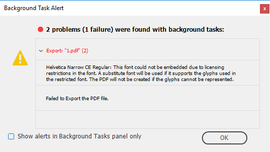
You can limit the script to process only the fonts located in the selected folder and its subfolders.
Tip: the folder with fonts can be located anywhere on a hard drive. You can install the fonts in InDesign by creating a shortcut (alias) to it in the InDesign’s Fonts folder, like so:
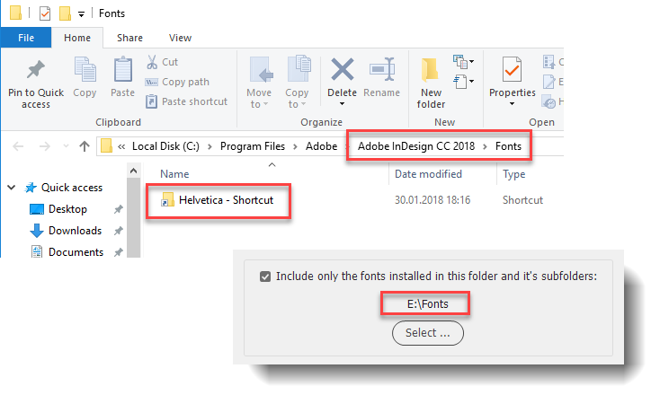
In the bottom-most field, the user enters the beginning for the font names to be included. For example, I want to make samples for all ‘Franklin’ fonts. I have ten such fonts installed: eight of them are located in four different families containing two styles, and a couple of standalone fonts. (For InDesign, fonts in different families has nothing in common). By entering ‘Franklin’ into the field, I can get them all in one go. In the same way, if I type in, say, ‘F’, I’ll get only the fonts whose names begin with ‘F’.
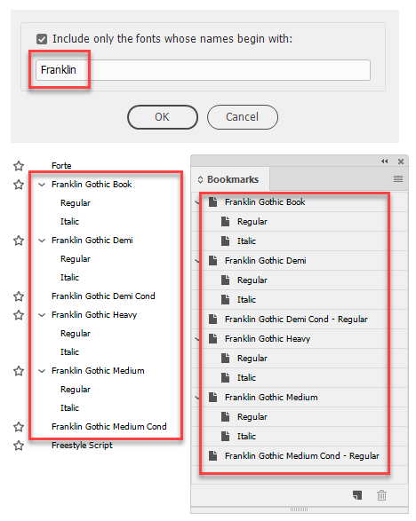
The script creates bookmarks so it is a good idea to export the catalog to PDF format. If a font has more than one style, two levels of nested bookmarks are created one (parent) for the font family, another for font styles.
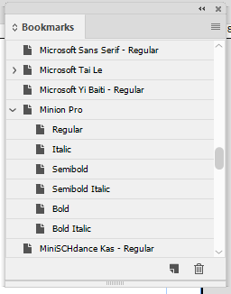
Important note: presumably beginning from the version CS4, a scripting bug has been introduced which lies in unreliable naming (renaming) bookmarks by script with the Bookmarks panel open. To work around the problem, if the panel is open, the script — in CS4 and above — temporarily closes it at start and then reopens it at the end.
Processing a large number of fonts may take long time. For that reason, the script displays the progress bar with the current font name below:
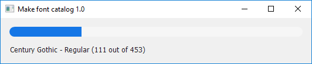
At the end, the final report is displayed showing how many font samples were created and how much time elapsed.
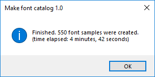
If you select one font, the catalog is created ignoring the include/exclude settings chosen: they become disabled (grayed out) in the dialog box.
Click here to download the script.
If you found this script useful and want me to develop it further, consider supporting me by donating via PayPal directly to my e-mail: askoldich [at] yahoo [dot] com. (Due to PayPal´s restrictions for Ukraine, I can´t have a Donate button on my site.)